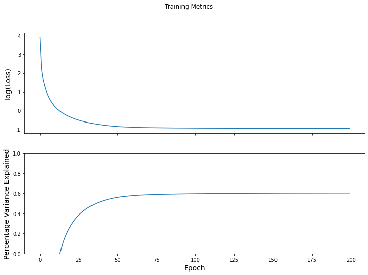
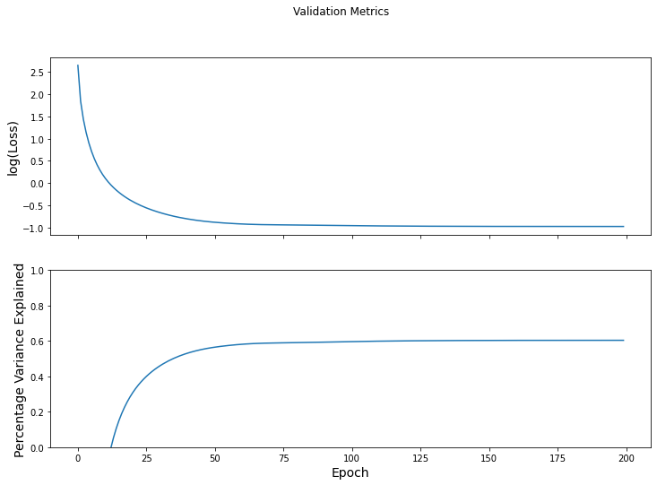

Timeseries Simulation¶
Load data¶
# Load dataset
X, X_len, clip_y, num_subjs, num_clips = get_data()
# clip names
clip_name_to_idx = _get_clip_labels()
clip_idx_to_name = {v: k for k, v in clip_name_to_idx.items()}
clip_idx_to_name[0] = clip_idx_to_name[0][:-1] # get rid of run number in test-retest
clip_names = list(clip_idx_to_name.keys())
# # Pad each time-series with zeros to equalize lengths
# X = pad_data(X)
# Fix a clip for simulating its trajectory
clip_num = 4
X_clip = [X[i] for i in range(len(clip_y)) if clip_y[i] == clip_num]
y_clip = [clip_y[i] for i in range(len(clip_y)) if clip_y[i] == clip_num]
loading run 1/1
Create graphs from data¶
Here we use a history of length k = 5.
# Create data
X = []
y = []
# Length of memory/history of data-sequence
k = 5
for idx_subj in range(num_subjs):
x = X_clip[idx_subj]
for idx_tp in range(k, x.shape[0]):
x_tp = x[idx_tp - k : idx_tp, :]
y_tp = x[idx_tp, :]
X.append(x_tp)
y.append(y_tp)
y = np.array(y)
# Create graphs from data
prob_edge = 0.1
graphs_dict_list = clip_graphs(X,
prob_edge=prob_edge)
Performance evaluation¶
Model training¶
# Train, test split
num_X = len(X)
num_train = round(0.8 * num_X)
num_val = 0 * num_X
num_test = num_X - num_train - num_val
num_splits = 1
test_accuracy_results = []
for idx_split in range(num_splits):
# Shuffle data for random train-test splits
# rand_idx = np.rand_perm = np.random.permutation(num_X)
# graphs_dict_list_perm = list(map(lambda i: graphs_dict_list[i], rand_idx))
# y_perm = y[rand_idx, :]
graphs_dict_list_perm = graphs_dict_list
y_perm = y
# Create split
train_G, train_y, val_G, val_y, test_G, test_y = train_val_test_split(graphs_dict_list_perm,
y_perm,
num_train,
num_val,
num_test)
model = NLNNProcessDecode(num_nodes=train_G[0]['nodes'].shape[0],
k_layers=[16],
num_processing_steps=0)
graph_slice = lambda x, start, end : utils_tf.data_dicts_to_graphs_tuple(x[start : end])
NLNN_simulator = base_model(task_type="regression",
model=model,
loss_object=tf.keras.losses.MeanSquaredError(),
optimizer=tf.keras.optimizers.Adam(learning_rate=1e-4),
eval_metric=tfa.metrics.RSquare(),
eval_metric_name="% var explained",
batch_size=128,
slice_input=graph_slice)
results = NLNN_simulator.fit(train_X=train_G,
train_Y=train_y,
val_X=test_G,
val_Y=test_y,
num_epochs=200)
Epoch 000: Train Loss: 50.031, Train % var explained: -4868.926% Val Loss: 14.078, Val % var explained: -1367.813%
Epoch 001: Train Loss: 9.470, Train % var explained: -862.824% Val Loss: 6.295, Val % var explained: -555.771%
Epoch 002: Train Loss: 5.363, Train % var explained: -448.912% Val Loss: 4.204, Val % var explained: -338.431%
Epoch 003: Train Loss: 3.782, Train % var explained: -287.745% Val Loss: 3.127, Val % var explained: -226.431%
Epoch 004: Train Loss: 2.892, Train % var explained: -196.805% Val Loss: 2.471, Val % var explained: -158.015%
Epoch 005: Train Loss: 2.328, Train % var explained: -139.067% Val Loss: 2.037, Val % var explained: -112.695%
Epoch 006: Train Loss: 1.946, Train % var explained: -99.879% Val Loss: 1.733, Val % var explained: -81.003%
Epoch 007: Train Loss: 1.674, Train % var explained: -71.997% Val Loss: 1.513, Val % var explained: -57.935%
Epoch 008: Train Loss: 1.473, Train % var explained: -51.430% Val Loss: 1.347, Val % var explained: -40.594%
Epoch 009: Train Loss: 1.320, Train % var explained: -35.789% Val Loss: 1.218, Val % var explained: -27.181%
Epoch 010: Train Loss: 1.201, Train % var explained: -23.561% Val Loss: 1.116, Val % var explained: -16.530%
Epoch 011: Train Loss: 1.106, Train % var explained: -13.757% Val Loss: 1.033, Val % var explained: -7.867%
Epoch 012: Train Loss: 1.028, Train % var explained: -5.716% Val Loss: 0.964, Val % var explained: -0.676%
Epoch 013: Train Loss: 0.962, Train % var explained: 1.006% Val Loss: 0.906, Val % var explained: 5.398%
Epoch 014: Train Loss: 0.907, Train % var explained: 6.715% Val Loss: 0.856, Val % var explained: 10.599%
Epoch 015: Train Loss: 0.859, Train % var explained: 11.626% Val Loss: 0.813, Val % var explained: 15.102%
Epoch 016: Train Loss: 0.817, Train % var explained: 15.894% Val Loss: 0.775, Val % var explained: 19.036%
Epoch 017: Train Loss: 0.781, Train % var explained: 19.635% Val Loss: 0.742, Val % var explained: 22.499%
Epoch 018: Train Loss: 0.749, Train % var explained: 22.939% Val Loss: 0.712, Val % var explained: 25.567%
Epoch 019: Train Loss: 0.720, Train % var explained: 25.876% Val Loss: 0.686, Val % var explained: 28.302%
Epoch 020: Train Loss: 0.695, Train % var explained: 28.501% Val Loss: 0.662, Val % var explained: 30.754%
Epoch 021: Train Loss: 0.672, Train % var explained: 30.861% Val Loss: 0.641, Val % var explained: 32.962%
Epoch 022: Train Loss: 0.651, Train % var explained: 32.993% Val Loss: 0.622, Val % var explained: 34.961%
Epoch 023: Train Loss: 0.632, Train % var explained: 34.928% Val Loss: 0.605, Val % var explained: 36.779%
Epoch 024: Train Loss: 0.615, Train % var explained: 36.691% Val Loss: 0.589, Val % var explained: 38.439%
Epoch 025: Train Loss: 0.599, Train % var explained: 38.305% Val Loss: 0.574, Val % var explained: 39.961%
Epoch 026: Train Loss: 0.585, Train % var explained: 39.786% Val Loss: 0.561, Val % var explained: 41.361%
Epoch 027: Train Loss: 0.572, Train % var explained: 41.150% Val Loss: 0.548, Val % var explained: 42.652%
Epoch 028: Train Loss: 0.560, Train % var explained: 42.411% Val Loss: 0.537, Val % var explained: 43.847%
Epoch 029: Train Loss: 0.548, Train % var explained: 43.578% Val Loss: 0.526, Val % var explained: 44.954%
Epoch 030: Train Loss: 0.538, Train % var explained: 44.660% Val Loss: 0.516, Val % var explained: 45.981%
Epoch 031: Train Loss: 0.528, Train % var explained: 45.666% Val Loss: 0.507, Val % var explained: 46.936%
Epoch 032: Train Loss: 0.519, Train % var explained: 46.603% Val Loss: 0.499, Val % var explained: 47.825%
Epoch 033: Train Loss: 0.510, Train % var explained: 47.476% Val Loss: 0.491, Val % var explained: 48.653%
Epoch 034: Train Loss: 0.502, Train % var explained: 48.291% Val Loss: 0.483, Val % var explained: 49.425%
Epoch 035: Train Loss: 0.495, Train % var explained: 49.052% Val Loss: 0.476, Val % var explained: 50.144%
Epoch 036: Train Loss: 0.488, Train % var explained: 49.764% Val Loss: 0.470, Val % var explained: 50.814%
Epoch 037: Train Loss: 0.482, Train % var explained: 50.429% Val Loss: 0.464, Val % var explained: 51.437%
Epoch 038: Train Loss: 0.476, Train % var explained: 51.051% Val Loss: 0.458, Val % var explained: 52.016%
Epoch 039: Train Loss: 0.470, Train % var explained: 51.632% Val Loss: 0.453, Val % var explained: 52.554%
Epoch 040: Train Loss: 0.465, Train % var explained: 52.176% Val Loss: 0.448, Val % var explained: 53.054%
Epoch 041: Train Loss: 0.460, Train % var explained: 52.684% Val Loss: 0.444, Val % var explained: 53.519%
Epoch 042: Train Loss: 0.455, Train % var explained: 53.159% Val Loss: 0.440, Val % var explained: 53.950%
Epoch 043: Train Loss: 0.451, Train % var explained: 53.602% Val Loss: 0.436, Val % var explained: 54.352%
Epoch 044: Train Loss: 0.447, Train % var explained: 54.015% Val Loss: 0.432, Val % var explained: 54.725%
Epoch 045: Train Loss: 0.443, Train % var explained: 54.400% Val Loss: 0.429, Val % var explained: 55.072%
Epoch 046: Train Loss: 0.440, Train % var explained: 54.758% Val Loss: 0.426, Val % var explained: 55.392%
Epoch 047: Train Loss: 0.437, Train % var explained: 55.091% Val Loss: 0.423, Val % var explained: 55.689%
Epoch 048: Train Loss: 0.434, Train % var explained: 55.400% Val Loss: 0.420, Val % var explained: 55.963%
Epoch 049: Train Loss: 0.431, Train % var explained: 55.687% Val Loss: 0.418, Val % var explained: 56.215%
Epoch 050: Train Loss: 0.428, Train % var explained: 55.953% Val Loss: 0.416, Val % var explained: 56.448%
Epoch 051: Train Loss: 0.426, Train % var explained: 56.199% Val Loss: 0.414, Val % var explained: 56.664%
Epoch 052: Train Loss: 0.424, Train % var explained: 56.428% Val Loss: 0.412, Val % var explained: 56.865%
Epoch 053: Train Loss: 0.422, Train % var explained: 56.639% Val Loss: 0.410, Val % var explained: 57.053%
Epoch 054: Train Loss: 0.420, Train % var explained: 56.836% Val Loss: 0.408, Val % var explained: 57.230%
Epoch 055: Train Loss: 0.418, Train % var explained: 57.017% Val Loss: 0.407, Val % var explained: 57.397%
Epoch 056: Train Loss: 0.416, Train % var explained: 57.186% Val Loss: 0.405, Val % var explained: 57.555%
Epoch 057: Train Loss: 0.415, Train % var explained: 57.342% Val Loss: 0.404, Val % var explained: 57.704%
Epoch 058: Train Loss: 0.413, Train % var explained: 57.487% Val Loss: 0.402, Val % var explained: 57.843%
Epoch 059: Train Loss: 0.412, Train % var explained: 57.621% Val Loss: 0.401, Val % var explained: 57.971%
Epoch 060: Train Loss: 0.411, Train % var explained: 57.745% Val Loss: 0.400, Val % var explained: 58.089%
Epoch 061: Train Loss: 0.410, Train % var explained: 57.859% Val Loss: 0.399, Val % var explained: 58.197%
Epoch 062: Train Loss: 0.409, Train % var explained: 57.966% Val Loss: 0.398, Val % var explained: 58.294%
Epoch 063: Train Loss: 0.408, Train % var explained: 58.064% Val Loss: 0.397, Val % var explained: 58.381%
Epoch 064: Train Loss: 0.407, Train % var explained: 58.155% Val Loss: 0.396, Val % var explained: 58.458%
Epoch 065: Train Loss: 0.406, Train % var explained: 58.240% Val Loss: 0.396, Val % var explained: 58.526%
Epoch 066: Train Loss: 0.405, Train % var explained: 58.319% Val Loss: 0.395, Val % var explained: 58.586%
Epoch 067: Train Loss: 0.405, Train % var explained: 58.392% Val Loss: 0.395, Val % var explained: 58.637%
Epoch 068: Train Loss: 0.404, Train % var explained: 58.460% Val Loss: 0.394, Val % var explained: 58.682%
Epoch 069: Train Loss: 0.404, Train % var explained: 58.524% Val Loss: 0.394, Val % var explained: 58.721%
Epoch 070: Train Loss: 0.403, Train % var explained: 58.584% Val Loss: 0.394, Val % var explained: 58.755%
Epoch 071: Train Loss: 0.402, Train % var explained: 58.640% Val Loss: 0.393, Val % var explained: 58.784%
Epoch 072: Train Loss: 0.402, Train % var explained: 58.693% Val Loss: 0.393, Val % var explained: 58.811%
Epoch 073: Train Loss: 0.402, Train % var explained: 58.743% Val Loss: 0.393, Val % var explained: 58.836%
Epoch 074: Train Loss: 0.401, Train % var explained: 58.791% Val Loss: 0.393, Val % var explained: 58.859%
Epoch 075: Train Loss: 0.401, Train % var explained: 58.836% Val Loss: 0.392, Val % var explained: 58.881%
Epoch 076: Train Loss: 0.400, Train % var explained: 58.880% Val Loss: 0.392, Val % var explained: 58.903%
Epoch 077: Train Loss: 0.400, Train % var explained: 58.922% Val Loss: 0.392, Val % var explained: 58.924%
Epoch 078: Train Loss: 0.399, Train % var explained: 58.962% Val Loss: 0.392, Val % var explained: 58.946%
Epoch 079: Train Loss: 0.399, Train % var explained: 59.001% Val Loss: 0.392, Val % var explained: 58.969%
Epoch 080: Train Loss: 0.399, Train % var explained: 59.038% Val Loss: 0.391, Val % var explained: 58.993%
Epoch 081: Train Loss: 0.398, Train % var explained: 59.074% Val Loss: 0.391, Val % var explained: 59.017%
Epoch 082: Train Loss: 0.398, Train % var explained: 59.108% Val Loss: 0.391, Val % var explained: 59.042%
Epoch 083: Train Loss: 0.398, Train % var explained: 59.142% Val Loss: 0.391, Val % var explained: 59.068%
Epoch 084: Train Loss: 0.397, Train % var explained: 59.174% Val Loss: 0.390, Val % var explained: 59.094%
Epoch 085: Train Loss: 0.397, Train % var explained: 59.206% Val Loss: 0.390, Val % var explained: 59.122%
Epoch 086: Train Loss: 0.397, Train % var explained: 59.236% Val Loss: 0.390, Val % var explained: 59.150%
Epoch 087: Train Loss: 0.397, Train % var explained: 59.266% Val Loss: 0.390, Val % var explained: 59.179%
Epoch 088: Train Loss: 0.396, Train % var explained: 59.294% Val Loss: 0.389, Val % var explained: 59.209%
Epoch 089: Train Loss: 0.396, Train % var explained: 59.322% Val Loss: 0.389, Val % var explained: 59.240%
Epoch 090: Train Loss: 0.396, Train % var explained: 59.349% Val Loss: 0.389, Val % var explained: 59.271%
Epoch 091: Train Loss: 0.396, Train % var explained: 59.375% Val Loss: 0.388, Val % var explained: 59.302%
Epoch 092: Train Loss: 0.395, Train % var explained: 59.400% Val Loss: 0.388, Val % var explained: 59.334%
Epoch 093: Train Loss: 0.395, Train % var explained: 59.424% Val Loss: 0.388, Val % var explained: 59.365%
Epoch 094: Train Loss: 0.395, Train % var explained: 59.448% Val Loss: 0.387, Val % var explained: 59.397%
Epoch 095: Train Loss: 0.395, Train % var explained: 59.470% Val Loss: 0.387, Val % var explained: 59.429%
Epoch 096: Train Loss: 0.394, Train % var explained: 59.493% Val Loss: 0.387, Val % var explained: 59.460%
Epoch 097: Train Loss: 0.394, Train % var explained: 59.514% Val Loss: 0.387, Val % var explained: 59.491%
Epoch 098: Train Loss: 0.394, Train % var explained: 59.535% Val Loss: 0.386, Val % var explained: 59.521%
Epoch 099: Train Loss: 0.394, Train % var explained: 59.555% Val Loss: 0.386, Val % var explained: 59.551%
Epoch 100: Train Loss: 0.394, Train % var explained: 59.575% Val Loss: 0.386, Val % var explained: 59.580%
Epoch 101: Train Loss: 0.394, Train % var explained: 59.594% Val Loss: 0.385, Val % var explained: 59.609%
Epoch 102: Train Loss: 0.393, Train % var explained: 59.612% Val Loss: 0.385, Val % var explained: 59.636%
Epoch 103: Train Loss: 0.393, Train % var explained: 59.630% Val Loss: 0.385, Val % var explained: 59.663%
Epoch 104: Train Loss: 0.393, Train % var explained: 59.647% Val Loss: 0.385, Val % var explained: 59.689%
Epoch 105: Train Loss: 0.393, Train % var explained: 59.664% Val Loss: 0.384, Val % var explained: 59.714%
Epoch 106: Train Loss: 0.393, Train % var explained: 59.681% Val Loss: 0.384, Val % var explained: 59.738%
Epoch 107: Train Loss: 0.393, Train % var explained: 59.697% Val Loss: 0.384, Val % var explained: 59.762%
Epoch 108: Train Loss: 0.392, Train % var explained: 59.713% Val Loss: 0.384, Val % var explained: 59.784%
Epoch 109: Train Loss: 0.392, Train % var explained: 59.728% Val Loss: 0.383, Val % var explained: 59.806%
Epoch 110: Train Loss: 0.392, Train % var explained: 59.743% Val Loss: 0.383, Val % var explained: 59.826%
Epoch 111: Train Loss: 0.392, Train % var explained: 59.757% Val Loss: 0.383, Val % var explained: 59.846%
Epoch 112: Train Loss: 0.392, Train % var explained: 59.771% Val Loss: 0.383, Val % var explained: 59.865%
Epoch 113: Train Loss: 0.392, Train % var explained: 59.785% Val Loss: 0.383, Val % var explained: 59.884%
Epoch 114: Train Loss: 0.392, Train % var explained: 59.798% Val Loss: 0.383, Val % var explained: 59.902%
Epoch 115: Train Loss: 0.392, Train % var explained: 59.811% Val Loss: 0.382, Val % var explained: 59.919%
Epoch 116: Train Loss: 0.391, Train % var explained: 59.824% Val Loss: 0.382, Val % var explained: 59.935%
Epoch 117: Train Loss: 0.391, Train % var explained: 59.836% Val Loss: 0.382, Val % var explained: 59.951%
Epoch 118: Train Loss: 0.391, Train % var explained: 59.848% Val Loss: 0.382, Val % var explained: 59.966%
Epoch 119: Train Loss: 0.391, Train % var explained: 59.860% Val Loss: 0.382, Val % var explained: 59.981%
Epoch 120: Train Loss: 0.391, Train % var explained: 59.871% Val Loss: 0.382, Val % var explained: 59.995%
Epoch 121: Train Loss: 0.391, Train % var explained: 59.882% Val Loss: 0.382, Val % var explained: 60.008%
Epoch 122: Train Loss: 0.391, Train % var explained: 59.893% Val Loss: 0.381, Val % var explained: 60.021%
Epoch 123: Train Loss: 0.391, Train % var explained: 59.903% Val Loss: 0.381, Val % var explained: 60.034%
Epoch 124: Train Loss: 0.391, Train % var explained: 59.913% Val Loss: 0.381, Val % var explained: 60.046%
Epoch 125: Train Loss: 0.390, Train % var explained: 59.923% Val Loss: 0.381, Val % var explained: 60.058%
Epoch 126: Train Loss: 0.390, Train % var explained: 59.933% Val Loss: 0.381, Val % var explained: 60.069%
Epoch 127: Train Loss: 0.390, Train % var explained: 59.942% Val Loss: 0.381, Val % var explained: 60.080%
Epoch 128: Train Loss: 0.390, Train % var explained: 59.951% Val Loss: 0.381, Val % var explained: 60.090%
Epoch 129: Train Loss: 0.390, Train % var explained: 59.960% Val Loss: 0.381, Val % var explained: 60.100%
Epoch 130: Train Loss: 0.390, Train % var explained: 59.969% Val Loss: 0.381, Val % var explained: 60.109%
Epoch 131: Train Loss: 0.390, Train % var explained: 59.977% Val Loss: 0.380, Val % var explained: 60.119%
Epoch 132: Train Loss: 0.390, Train % var explained: 59.986% Val Loss: 0.380, Val % var explained: 60.127%
Epoch 133: Train Loss: 0.390, Train % var explained: 59.994% Val Loss: 0.380, Val % var explained: 60.136%
Epoch 134: Train Loss: 0.390, Train % var explained: 60.001% Val Loss: 0.380, Val % var explained: 60.144%
Epoch 135: Train Loss: 0.390, Train % var explained: 60.009% Val Loss: 0.380, Val % var explained: 60.152%
Epoch 136: Train Loss: 0.390, Train % var explained: 60.016% Val Loss: 0.380, Val % var explained: 60.159%
Epoch 137: Train Loss: 0.390, Train % var explained: 60.023% Val Loss: 0.380, Val % var explained: 60.166%
Epoch 138: Train Loss: 0.389, Train % var explained: 60.030% Val Loss: 0.380, Val % var explained: 60.173%
Epoch 139: Train Loss: 0.389, Train % var explained: 60.037% Val Loss: 0.380, Val % var explained: 60.180%
Epoch 140: Train Loss: 0.389, Train % var explained: 60.044% Val Loss: 0.380, Val % var explained: 60.186%
Epoch 141: Train Loss: 0.389, Train % var explained: 60.050% Val Loss: 0.380, Val % var explained: 60.192%
Epoch 142: Train Loss: 0.389, Train % var explained: 60.056% Val Loss: 0.380, Val % var explained: 60.198%
Epoch 143: Train Loss: 0.389, Train % var explained: 60.062% Val Loss: 0.380, Val % var explained: 60.203%
Epoch 144: Train Loss: 0.389, Train % var explained: 60.068% Val Loss: 0.380, Val % var explained: 60.208%
Epoch 145: Train Loss: 0.389, Train % var explained: 60.074% Val Loss: 0.380, Val % var explained: 60.213%
Epoch 146: Train Loss: 0.389, Train % var explained: 60.080% Val Loss: 0.380, Val % var explained: 60.218%
Epoch 147: Train Loss: 0.389, Train % var explained: 60.085% Val Loss: 0.379, Val % var explained: 60.223%
Epoch 148: Train Loss: 0.389, Train % var explained: 60.091% Val Loss: 0.379, Val % var explained: 60.227%
Epoch 149: Train Loss: 0.389, Train % var explained: 60.096% Val Loss: 0.379, Val % var explained: 60.231%
Epoch 150: Train Loss: 0.389, Train % var explained: 60.101% Val Loss: 0.379, Val % var explained: 60.235%
Epoch 151: Train Loss: 0.389, Train % var explained: 60.106% Val Loss: 0.379, Val % var explained: 60.239%
Epoch 152: Train Loss: 0.389, Train % var explained: 60.110% Val Loss: 0.379, Val % var explained: 60.243%
Epoch 153: Train Loss: 0.389, Train % var explained: 60.115% Val Loss: 0.379, Val % var explained: 60.246%
Epoch 154: Train Loss: 0.389, Train % var explained: 60.120% Val Loss: 0.379, Val % var explained: 60.249%
Epoch 155: Train Loss: 0.389, Train % var explained: 60.124% Val Loss: 0.379, Val % var explained: 60.252%
Epoch 156: Train Loss: 0.389, Train % var explained: 60.128% Val Loss: 0.379, Val % var explained: 60.255%
Epoch 157: Train Loss: 0.388, Train % var explained: 60.132% Val Loss: 0.379, Val % var explained: 60.258%
Epoch 158: Train Loss: 0.388, Train % var explained: 60.136% Val Loss: 0.379, Val % var explained: 60.261%
Epoch 159: Train Loss: 0.388, Train % var explained: 60.140% Val Loss: 0.379, Val % var explained: 60.264%
Epoch 160: Train Loss: 0.388, Train % var explained: 60.144% Val Loss: 0.379, Val % var explained: 60.266%
Epoch 161: Train Loss: 0.388, Train % var explained: 60.148% Val Loss: 0.379, Val % var explained: 60.268%
Epoch 162: Train Loss: 0.388, Train % var explained: 60.152% Val Loss: 0.379, Val % var explained: 60.271%
Epoch 163: Train Loss: 0.388, Train % var explained: 60.155% Val Loss: 0.379, Val % var explained: 60.273%
Epoch 164: Train Loss: 0.388, Train % var explained: 60.159% Val Loss: 0.379, Val % var explained: 60.275%
Epoch 165: Train Loss: 0.388, Train % var explained: 60.162% Val Loss: 0.379, Val % var explained: 60.277%
Epoch 166: Train Loss: 0.388, Train % var explained: 60.165% Val Loss: 0.379, Val % var explained: 60.279%
Epoch 167: Train Loss: 0.388, Train % var explained: 60.169% Val Loss: 0.379, Val % var explained: 60.280%
Epoch 168: Train Loss: 0.388, Train % var explained: 60.172% Val Loss: 0.379, Val % var explained: 60.282%
Epoch 169: Train Loss: 0.388, Train % var explained: 60.175% Val Loss: 0.379, Val % var explained: 60.284%
Epoch 170: Train Loss: 0.388, Train % var explained: 60.178% Val Loss: 0.379, Val % var explained: 60.285%
Epoch 171: Train Loss: 0.388, Train % var explained: 60.181% Val Loss: 0.379, Val % var explained: 60.287%
Epoch 172: Train Loss: 0.388, Train % var explained: 60.183% Val Loss: 0.379, Val % var explained: 60.288%
Epoch 173: Train Loss: 0.388, Train % var explained: 60.186% Val Loss: 0.379, Val % var explained: 60.289%
Epoch 174: Train Loss: 0.388, Train % var explained: 60.189% Val Loss: 0.379, Val % var explained: 60.290%
Epoch 175: Train Loss: 0.388, Train % var explained: 60.191% Val Loss: 0.379, Val % var explained: 60.292%
Epoch 176: Train Loss: 0.388, Train % var explained: 60.194% Val Loss: 0.379, Val % var explained: 60.293%
Epoch 177: Train Loss: 0.388, Train % var explained: 60.196% Val Loss: 0.379, Val % var explained: 60.294%
Epoch 178: Train Loss: 0.388, Train % var explained: 60.199% Val Loss: 0.379, Val % var explained: 60.295%
Epoch 179: Train Loss: 0.388, Train % var explained: 60.201% Val Loss: 0.379, Val % var explained: 60.296%
Epoch 180: Train Loss: 0.388, Train % var explained: 60.203% Val Loss: 0.379, Val % var explained: 60.296%
Epoch 181: Train Loss: 0.388, Train % var explained: 60.206% Val Loss: 0.379, Val % var explained: 60.297%
Epoch 182: Train Loss: 0.388, Train % var explained: 60.208% Val Loss: 0.379, Val % var explained: 60.298%
Epoch 183: Train Loss: 0.388, Train % var explained: 60.210% Val Loss: 0.379, Val % var explained: 60.299%
Epoch 184: Train Loss: 0.388, Train % var explained: 60.212% Val Loss: 0.379, Val % var explained: 60.300%
Epoch 185: Train Loss: 0.388, Train % var explained: 60.214% Val Loss: 0.379, Val % var explained: 60.300%
Epoch 186: Train Loss: 0.388, Train % var explained: 60.216% Val Loss: 0.379, Val % var explained: 60.301%
Epoch 187: Train Loss: 0.388, Train % var explained: 60.218% Val Loss: 0.379, Val % var explained: 60.301%
Epoch 188: Train Loss: 0.388, Train % var explained: 60.220% Val Loss: 0.379, Val % var explained: 60.302%
Epoch 189: Train Loss: 0.388, Train % var explained: 60.222% Val Loss: 0.379, Val % var explained: 60.303%
Epoch 190: Train Loss: 0.388, Train % var explained: 60.223% Val Loss: 0.379, Val % var explained: 60.303%
Epoch 191: Train Loss: 0.388, Train % var explained: 60.225% Val Loss: 0.379, Val % var explained: 60.304%
Epoch 192: Train Loss: 0.388, Train % var explained: 60.227% Val Loss: 0.379, Val % var explained: 60.304%
Epoch 193: Train Loss: 0.387, Train % var explained: 60.229% Val Loss: 0.379, Val % var explained: 60.304%
Epoch 194: Train Loss: 0.387, Train % var explained: 60.230% Val Loss: 0.379, Val % var explained: 60.305%
Epoch 195: Train Loss: 0.387, Train % var explained: 60.232% Val Loss: 0.379, Val % var explained: 60.305%
Epoch 196: Train Loss: 0.387, Train % var explained: 60.233% Val Loss: 0.379, Val % var explained: 60.306%
Epoch 197: Train Loss: 0.387, Train % var explained: 60.235% Val Loss: 0.379, Val % var explained: 60.306%
Epoch 198: Train Loss: 0.387, Train % var explained: 60.236% Val Loss: 0.379, Val % var explained: 60.306%
Epoch 199: Train Loss: 0.387, Train % var explained: 60.238% Val Loss: 0.379, Val % var explained: 60.307%
train_loss_results = results[0]
train_pve_results = results[1]
test_loss_results = results[2]
test_pve_results = results[3]
# Training metrics
fig_tr, axes = plt.subplots(2, sharex=True, figsize=(12, 8))
fig_tr.suptitle('Training Metrics')
axes[0].set_ylabel("log(Loss)", fontsize=14)
axes[0].plot(np.log(train_loss_results))
axes[1].set_ylabel("Percentage Variance Explained", fontsize=14)
axes[1].set_xlabel("Epoch", fontsize=14)
axes[1].set_ylim([0, 1])
axes[1].plot(train_pve_results)
plt.show()
# Validation metrics
fig_val, axes = plt.subplots(2, sharex=True, figsize=(12, 8))
fig_val.suptitle('Validation Metrics')
axes[0].set_ylabel("log(Loss)", fontsize=14)
axes[0].plot(np.log(test_loss_results))
axes[1].set_ylabel("Percentage Variance Explained", fontsize=14)
axes[1].set_xlabel("Epoch", fontsize=14)
axes[1].set_ylim([0, 1])
axes[1].plot(test_pve_results)
plt.show()

